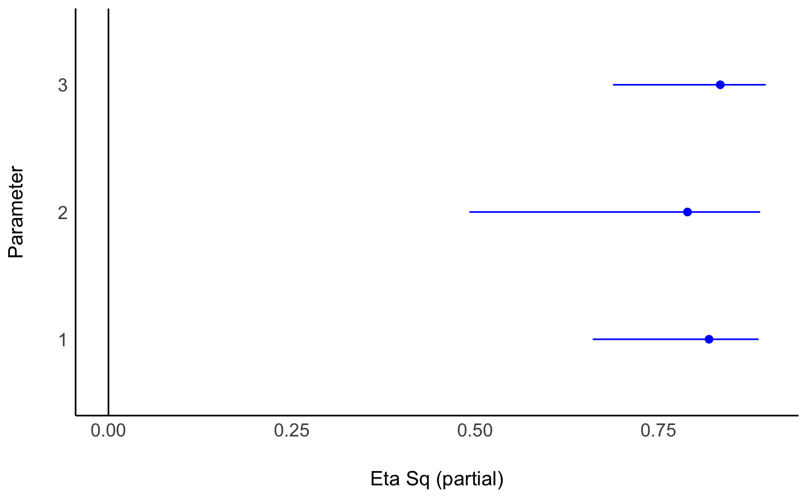

Convert F and t Statistics to partial-\(\eta^2\) and Other ANOVA Effect Sizes
Source:R/convert_stat_to_anova.R
F_to_eta2.RdThese functions are convenience functions to convert F and t test statistics
to partial Eta- (\(\eta\)), Omega- (\(\omega\)) Epsilon-
(\(\epsilon\)) squared (an alias for the adjusted Eta squared) and Cohen's
f. These are useful in cases where the various Sum of Squares and Mean
Squares are not easily available or their computation is not straightforward
(e.g., in liner mixed models, contrasts, etc.). For test statistics derived
from lm and aov models, these functions give exact results. For all other
cases, they return close approximations.
See Effect Size from Test Statistics vignette.
Usage
F_to_eta2(f, df, df_error, ci = 0.95, alternative = "greater", ...)
t_to_eta2(t, df_error, ci = 0.95, alternative = "greater", ...)
F_to_epsilon2(f, df, df_error, ci = 0.95, alternative = "greater", ...)
t_to_epsilon2(t, df_error, ci = 0.95, alternative = "greater", ...)
F_to_eta2_adj(f, df, df_error, ci = 0.95, alternative = "greater", ...)
t_to_eta2_adj(t, df_error, ci = 0.95, alternative = "greater", ...)
F_to_omega2(f, df, df_error, ci = 0.95, alternative = "greater", ...)
t_to_omega2(t, df_error, ci = 0.95, alternative = "greater", ...)
F_to_f(
f,
df,
df_error,
squared = FALSE,
ci = 0.95,
alternative = "greater",
...
)
t_to_f(t, df_error, squared = FALSE, ci = 0.95, alternative = "greater", ...)
F_to_f2(
f,
df,
df_error,
squared = TRUE,
ci = 0.95,
alternative = "greater",
...
)
t_to_f2(t, df_error, squared = TRUE, ci = 0.95, alternative = "greater", ...)Arguments
- df, df_error
Degrees of freedom of numerator or of the error estimate (i.e., the residuals).
- ci
Confidence Interval (CI) level
- alternative
a character string specifying the alternative hypothesis; Controls the type of CI returned:
"greater"(default) or"less"(one-sided CI), or"two.sided"(default, two-sided CI). Partial matching is allowed (e.g.,"g","l","two"...). See One-Sided CIs in effectsize_CIs.- ...
Arguments passed to or from other methods.
- t, f
The t or the F statistics.
- squared
Return Cohen's f or Cohen's f-squared?
Value
A data frame with the effect size(s) between 0-1 (Eta2_partial,
Epsilon2_partial, Omega2_partial, Cohens_f_partial or
Cohens_f2_partial), and their CIs (CI_low and CI_high).
Details
These functions use the following formulae:
$$\eta_p^2 = \frac{F \times df_{num}}{F \times df_{num} + df_{den}}$$
$$\epsilon_p^2 = \frac{(F - 1) \times df_{num}}{F \times df_{num} + df_{den}}$$
$$\omega_p^2 = \frac{(F - 1) \times df_{num}}{F \times df_{num} + df_{den} + 1}$$
$$f_p = \sqrt{\frac{\eta_p^2}{1-\eta_p^2}}$$
For t, the conversion is based on the equality of \(t^2 = F\) when \(df_{num}=1\).
Choosing an Un-Biased Estimate
Both Omega and Epsilon are unbiased estimators of the population Eta. But which to choose? Though Omega is the more popular choice, it should be noted that:
The formula given above for Omega is only an approximation for complex designs.
Epsilon has been found to be less biased (Carroll & Nordholm, 1975).
Confidence (Compatibility) Intervals (CIs)
Unless stated otherwise, confidence (compatibility) intervals (CIs) are
estimated using the noncentrality parameter method (also called the "pivot
method"). This method finds the noncentrality parameter ("ncp") of a
noncentral t, F, or \(\chi^2\) distribution that places the observed
t, F, or \(\chi^2\) test statistic at the desired probability point of
the distribution. For example, if the observed t statistic is 2.0, with 50
degrees of freedom, for which cumulative noncentral t distribution is t =
2.0 the .025 quantile (answer: the noncentral t distribution with ncp =
.04)? After estimating these confidence bounds on the ncp, they are
converted into the effect size metric to obtain a confidence interval for the
effect size (Steiger, 2004).
For additional details on estimation and troubleshooting, see effectsize_CIs.
CIs and Significance Tests
"Confidence intervals on measures of effect size convey all the information
in a hypothesis test, and more." (Steiger, 2004). Confidence (compatibility)
intervals and p values are complementary summaries of parameter uncertainty
given the observed data. A dichotomous hypothesis test could be performed
with either a CI or a p value. The 100 (1 - \(\alpha\))% confidence
interval contains all of the parameter values for which p > \(\alpha\)
for the current data and model. For example, a 95% confidence interval
contains all of the values for which p > .05.
Note that a confidence interval including 0 does not indicate that the null
(no effect) is true. Rather, it suggests that the observed data together with
the model and its assumptions combined do not provided clear evidence against
a parameter value of 0 (same as with any other value in the interval), with
the level of this evidence defined by the chosen \(\alpha\) level (Rafi &
Greenland, 2020; Schweder & Hjort, 2016; Xie & Singh, 2013). To infer no
effect, additional judgments about what parameter values are "close enough"
to 0 to be negligible are needed ("equivalence testing"; Bauer & Kiesser,
1996).
References
Albers, C., & Lakens, D. (2018). When power analyses based on pilot data are biased: Inaccurate effect size estimators and follow-up bias. Journal of experimental social psychology, 74, 187-195. doi:10.31234/osf.io/b7z4q
Carroll, R. M., & Nordholm, L. A. (1975). Sampling Characteristics of Kelley's epsilon and Hays' omega. Educational and Psychological Measurement, 35(3), 541-554.
Cumming, G., & Finch, S. (2001). A primer on the understanding, use, and calculation of confidence intervals that are based on central and noncentral distributions. Educational and Psychological Measurement, 61(4), 532-574.
Friedman, H. (1982). Simplified determinations of statistical power, magnitude of effect and research sample sizes. Educational and Psychological Measurement, 42(2), 521-526. doi:10.1177/001316448204200214
Mordkoff, J. T. (2019). A Simple Method for Removing Bias From a Popular Measure of Standardized Effect Size: Adjusted Partial Eta Squared. Advances in Methods and Practices in Psychological Science, 2(3), 228-232. doi:10.1177/2515245919855053
Morey, R. D., Hoekstra, R., Rouder, J. N., Lee, M. D., & Wagenmakers, E. J. (2016). The fallacy of placing confidence in confidence intervals. Psychonomic bulletin & review, 23(1), 103-123.
Steiger, J. H. (2004). Beyond the F test: Effect size confidence intervals and tests of close fit in the analysis of variance and contrast analysis. Psychological Methods, 9, 164-182.
See also
eta_squared() for more details.
Other effect size from test statistic:
chisq_to_phi(),
t_to_d()
Examples
mod <- aov(mpg ~ factor(cyl) * factor(am), mtcars)
anova(mod)
#> Analysis of Variance Table
#>
#> Response: mpg
#> Df Sum Sq Mean Sq F value Pr(>F)
#> factor(cyl) 2 824.78 412.39 44.8517 3.725e-09 ***
#> factor(am) 1 36.77 36.77 3.9988 0.05608 .
#> factor(cyl):factor(am) 2 25.44 12.72 1.3832 0.26861
#> Residuals 26 239.06 9.19
#> ---
#> Signif. codes: 0 ‘***’ 0.001 ‘**’ 0.01 ‘*’ 0.05 ‘.’ 0.1 ‘ ’ 1
(etas <- F_to_eta2(
f = c(44.85, 3.99, 1.38),
df = c(2, 1, 2),
df_error = 26
))
#> Eta2 (partial) | 95% CI
#> -----------------------------
#> 0.78 | [0.63, 1.00]
#> 0.13 | [0.00, 1.00]
#> 0.10 | [0.00, 1.00]
#>
#> - One-sided CIs: upper bound fixed at [1.00].
if (require(see)) plot(etas)
#> Loading required package: see

# Compare to:
eta_squared(mod)
#> # Effect Size for ANOVA (Type I)
#>
#> Parameter | Eta2 (partial) | 95% CI
#> ------------------------------------------------------
#> factor(cyl) | 0.78 | [0.63, 1.00]
#> factor(am) | 0.13 | [0.00, 1.00]
#> factor(cyl):factor(am) | 0.10 | [0.00, 1.00]
#>
#> - One-sided CIs: upper bound fixed at [1.00].
if (FALSE) { # require(lmerTest) && interactive()
fit <- lmerTest::lmer(extra ~ group + (1 | ID), sleep)
# anova(fit)
# #> Type III Analysis of Variance Table with Satterthwaite's method
# #> Sum Sq Mean Sq NumDF DenDF F value Pr(>F)
# #> group 12.482 12.482 1 9 16.501 0.002833 **
# #> ---
# #> Signif. codes: 0 '***' 0.001 '**' 0.01 '*' 0.05 '.' 0.1 ' ' 1
F_to_eta2(16.501, 1, 9)
F_to_omega2(16.501, 1, 9)
F_to_epsilon2(16.501, 1, 9)
F_to_f(16.501, 1, 9)
}
## Use with emmeans based contrasts
## --------------------------------
warp.lm <- lm(breaks ~ wool * tension, data = warpbreaks)
jt <- emmeans::joint_tests(warp.lm, by = "wool")
F_to_eta2(jt$F.ratio, jt$df1, jt$df2)
#> Eta2 (partial) | 95% CI
#> -----------------------------
#> 0.30 | [0.12, 1.00]
#> 0.09 | [0.00, 1.00]
#>
#> - One-sided CIs: upper bound fixed at [1.00].